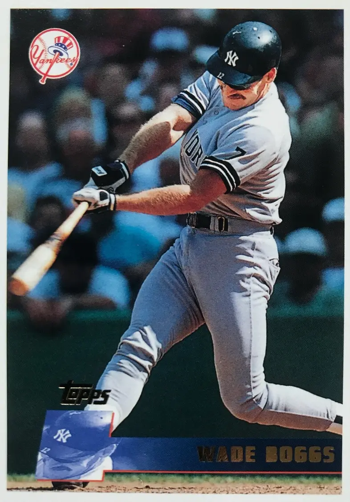

Wade Boggs "Chicken Man"
Career Highlights & Facts
(Facts are AI-generated and may require verification)
- Maintained a legendary pre-game ritual involving the consumption of poultry.
- Drew the Hebrew word for life in the dirt before every plate appearance.
- Fielded exactly 150 groundballs during every daily practice session.
Would you like to find out more about Wade Boggs?
Player Biography
Wade Boggs
January 4, 2012
/
in
BioProject - Person
3000 Hits
,
Batting Champions
Hall of Fame
1980s All-Stars
,
1990s All-Stars
1986 Boston Red Sox
,
Nuclear Powered Baseball
/
by
admin
This article was written by
Steve West
“That kid’s got a hell of a stance! Everything’s perfect! He ought to become a great hitter!” Legend has it that
Ted Williams
uttered these words while critiquing a photo of an 18-month-old boy.
1
He was absolutely right; that boy, Wade Boggs, went on to win several batting titles on his way to becoming one of the best hitters of all time in a Hall of Fame career.
Winfield “Win” Boggs was a Marine during World War II, and met Susan Graham, a mail-plane pilot, in 1945, marrying her just two weeks later. Win stayed in the military, serving as a pilot in the Air Force during the Korean War and moving his family around as military people often do. The couple had a son, Wayne, and daughter, Ann, and their third child, Wade Anthony Boggs, was born in Omaha, Nebraska, on June 15, 1958.
Wade loved the idea of being in a military family and having a regimented routine every day. This is something that would carry over to his entire baseball career, in which he would become known for doing set things at set times every day before a game.
Wade began playing baseball in Little League, receiving instruction from his father and several coaches. Win Boggs had retired from the military in 1967, and moved the family to Tampa, Florida, where he opened a fishing camp. At Henry B. Plant High School in Tampa, Wade played baseball and football. After he hit .522 as a junior, scouts began watching him play, and he switched from quarterback to kicker on the football team to avoid injury. He was good enough to become All-State in football and get a scholarship offer from the University of South Carolina.
In baseball Boggs had earned a reputation as a hitter, and pitchers wouldn’t throw strikes to him. When he tried to hit balls out of the strike zone he struggled, until his father got him the book
The Science of Hitting
by Ted Williams. After reading the book he realized he had lost some of his patience at the plate, and took Williams’s advice about not swinging at pitches out of the strike zone.
2
When this forced pitchers to throw strikes he hit everything, finishing the season hitting .485.
Scouts had seen Boggs struggle, and even when he hit they weren’t sure if he had the necessary talent to play professional baseball. He didn’t have much speed or range, and was rated poorly in most areas. The Major League Scouting Bureau called him a nonprospect. One scout wrote, “needs a lot of help with bat,” and thought it would take more money than he was worth to persuade him to turn down the football scholarship. But that scout hadn’t seen the drive that Boggs had to play baseball. Boston Red Sox scout George Digby had seen him play, and persuaded the team to select Boggs in the seventh round of the 1976 amateur draft. When the Red Sox offered $7,500, Boggs’s father said “You’re going to have to make a choice, son, college ball or pro ball.”
3
An easy choice for the young baseball fan, Boggs signed and went to the minor leagues.
Boggs was assigned to Elmira (New York) of the Class-A (rookie season) New York-Penn League, where he hit .263 and was below team average in almost every category. But the Red Sox saw enough in him to promote him to Winston-Salem of the Class-A Carolina League in 1977. Boggs proceeded to hit .332 that year, and showed an excellent batting eye by walking much more often than he struck out, something he would do every year until he was 40 years old.
Boggs still moved slowly through the Red Sox system. He was slow and he didn’t have much power; all he was showing was that batting average and the ability to earn bases on balls. “I was told in the minor leagues that I’ll never play third in the big leagues. That I don’t hit for power so I’m not going to play in the big leagues. I’m not fast enough. I was told so many different things.”
4
What he did have was drive. “The only thing I ever wanted to do was play professional baseball and in the minors I was getting paid to play so I didn’t get discouraged.”
5
He spent the 1978 and 1979 seasons at Bristol (Connecticut) of the Double-A Eastern League, followed by the 1980 and 1981 seasons at Pawtucket in the Triple-A International League. An event in baseball history that Boggs played in was the longest-ever professional baseball game, a 33-inning affair in 1981 between the Pawtucket Red Sox and the Rochester Red Wings that began on April 18 and, after being suspended in the wee hours of Easter morning, was finished on June 23. “When I doubled in the tying run in the 21st inning, I didn’t know if the guys wanted to hug me or slug me,” he said.
6
In 1981 he led the International League in hitting with a .335 average, and still didn’t get called up in September. On the last day of the season, his manager,
Joe Morgan
, suggested that Boggs play first base in winter ball. He went to Puerto Rico to play, but because of injuries to others he ended up playing third base again. This time he hit .354, and the Red Sox couldn’t ignore him any longer, adding him to the 40-man roster.
Boggs knew Debbie Bertucelli in high school, and they began dating. Shortly after his debut in the minor leagues he proposed, and they were married in December 1976. Two years later they had a daughter, Meagann, and eight years later a son, Brett (named for
George Brett
).
In 1982 Boggs was trapped behind reigning American League batting champion
Carney Lansford
, the Red Sox third baseman, but he had a good spring and manager
Ralph Houk
kept him as a utility infielder. It took a couple of extra days due to rainouts, but he made his major-league debut in the second game of a doubleheader at Baltimore on April 10, 1982. Boggs played first base and hit ninth, and didn’t show anything against Orioles starter
Dennis Martinez
or reliever
Sammy Stewart
. “I hit four dribblers in the infield, all off changeups,” he said.
7
He had a pinch-hit flyout a few days later, then sat for almost two weeks before again playing first base and batting ninth in the first game of a twi-night doubleheader in Chicago. This time, after a couple more groundouts, he came up and led off the eighth inning with a single off White Sox starting pitcher
Richard Dotson
. Boggs eventually came round to score, on
Jim Rice
’s single, what proved to be the winning run in a 3-2 game.
Before the June 23 night game versus Detroit, and hitting only .258, Boggs had played in just 15 of the team’s first 66 games. During that evening, Lansford tried for an inside-the-park home run, and suffered a severe ankle sprain in a collision with Tigers catcher
Lance Parrish
. Coming off the bench to replace Lansford, Boggs was hitless in two at-bats. his batting average dropping to .242. Houk said, “We’ll find out about Boggs,”
8
and Boggs took the opportunity with both hands, playing in 89 of the team’s last 96 games, hitting .358 while filling in for Lansford and playing first base when Carney returned a month later. That was enough to convince the Red Sox that he could do the job, and they traded Lansford to the Oakland Athletics after the season, giving Boggs the third-base job full-time. He would keep the job for the next 10 years.
Boggs finished a distant third behind
Cal Ripken Jr.
and
Kent Hrbek
for the American League Rookie of the Year award. But he knew he would be starting in the major leagues, and he would take the opportunity he had been given.
The comfort of being set as the everyday third baseman in 1983 gave Boggs a great deal of confidence. He spent the first month primarily in the leadoff position for the Red Sox, moved to fifth in the order for a couple of months, and spent the second half of the year hitting second. These moves never fazed him; he hit wherever he was put. Boggs was 6-feet-2 and weighed 190 pounds. He threw right-handed, but was a left-handed batter. He hit .397 in
Fenway Park
, hitting to the opposite field and taking advantage of the Green Monster, and hit .321 everywhere else. Boggs was consistent no matter what happened, and he was rewarded by comfortably winning his first American League batting title with a .361 average, which was 22 points better than runner-up
Rod Carew
(.339) of the California Angels. Boggs’s .444 on-base percentage led both leagues.
He followed up in 1984 by hitting .325, which placed him third in the American League, then began a streak of four batting titles in a row, 1985 through 1988. Consistency was again the watchword, as in those four seasons Boggs’s highest average was .368 and lowest was .357. His 240 hits in 1985 were the most in a major-league season since 1930. He led all of baseball in on-base percentage for five years in a row, through 1989. In 1985 he got his first of 12 consecutive All-Star selections, as the league recognized his hitting talent.
Boggs hit 24 home runs in 1987, more than double his total of any other years, seeming to indicate that he had more power potential than he usually employed, focused as he was on getting base hits and getting on base.
For all his efforts, and before Boggs arrived in Boston, the Red Sox had meandered around the middle or bottom of the AL East Division since 1980, until it all came together in 1986. Pitcher
Roger Clemens
came into his own, starting 14-0 as the Red Sox climbed to the top of the division. On May 14 they moved into a tie for first place in the division, and two days later they had the lead by themselves and never relinquished it for the rest of the season.
But a terrible disruption to the season occurred for Boggs on June 17, when his mother was killed by the driver of a cement truck who ran a red light. That driver was on work release from jail, and wasn’t supposed to be there, and got off with a charge of running a red light. Boggs was devastated. It took him years to let the incident go.
9
Boggs returned to baseball six days after his mother’s death, and baseball gave him a relief from it. He had his routines, embracing everything he did on game day, and that helped keep him from thinking about his mother. He resumed hitting, the Red Sox kept winning, and they ended up back in the postseason for the first time since losing the 1975 World Series. A tough best-of-seven American League Championship Series with the California Angels ensued, the Red Sox trailing three games to one before rallying to win three in a row. Boggs hit just .233 in the series.
In the 1986 World Series, the Red Sox faced the New York Mets. Boggs fared a little better, hitting .290, but was not much of a factor until the 10th inning in
Game Six
, when he doubled and later scored to give the Red Sox a 5-3 lead. But in perhaps the most famous ending to a World Series game ever, Boggs was playing third base when the ball was hit to
Bill Buckner
, and watched it travel through his legs to lose the game. Boggs said, “The ball could’ve easily been hit to me and gone through my legs. Nobody is blaming anybody. It’s fate.”
10
In
Game Seven
Boggs singled with two outs in the second inning to push the Red Sox to a 3-0 lead. But they couldn’t hold the lead and the Mets took over in the late innings and won the World Series. Boggs sat in the dugout and cried, the world thinking he was crying because his team had lost. But Boggs later said that wasn’t the case, that he had buried himself in baseball to forget about his mother’s death, and now that baseball was over his mother had come flooding back in. “When it was over, I was thinking, ‘Now I’ve got to go home and when I walk in the house, she’s not going to be there.’”
11
Boggs went home and commiserated with his father. Wade had decided that he would retire from baseball, because he wanted to spend more time with his family. Win persuaded him to carry on in baseball. “I told him life goes on, that he had to face up to his loss,” Win said.
12
Boggs returned to baseball and the Red Sox, and resumed hitting. He hit over .300 every year from 1982 to 1991, and in 1988 and 1990 the Red Sox won the AL East again, but both times they were swept by Oakland in the ALCS. Boggs hit .385 and .438 in the two series, but that wasn’t enough to get his team to a single win.
Scandal began for the Boggs family in 1988, when it was revealed that Wade had a four-year affair with a woman named Margo Adams. She had sued him for millions of dollars in a palimony lawsuit, and began telling her story to anyone who would listen, including
Penthouse
magazine and the Phil Donahue daytime television show. She said she had traveled with Boggs on Red Sox road trips, and that the whole team knew about her. Any time he would be away from home he would try to arrange for her to be there; even when he left spring training (with permission) for a couple of days to record his voice for an episode of the TV show
The Simpsons
, he took her with him to Los Angeles.
As the scandal broke around the team, Boggs told his wife, Debbie, everything. It was his honesty that made her want them to stay together. “I never had that feeling (of wanting to leave him) because of the way Wade handled it. We had an agreement that he would tell me everything.” The lawsuit was settled out of court and Boggs moved on, but to this day his name is always entwined with that of Adams.
In 1992 everything changed for Boggs. It was the worst year of his career; he hit only .259. He later blamed the Red Sox front office, saying that they had betrayed him in contract negotiations. He had a promise from
Jean Yawkey
, the Red Sox owner, for a five-year contract, because she wanted him to follow in the footsteps of Ted Williams and
Carl Yastrzemski
as career-long Red Sox legends. But she died before the contract was signed, and when Boggs talked to the new management, all they were offering was a year and an option. Boggs felt slighted, lost his legendary focus, and struggled in his last season with the Red Sox before the team decided not to re-sign him and let him become a free agent.
Despite his carefully regimented lifestyle, Boggs managed to find himself in the headlines for odd reasons over the years. In 1988 he received a minor cut on the neck from a knife after an altercation outside a bar in Gainesville, Florida. Two men, possibly attempting to rob Boggs and his friends, threatened them with the knife and a gun. Boggs said that he “willed himself invisible” during the fight.
13
In another incident, Boggs fell out of the family Jeep and was run over by his wife, Debbie. Although he was not seriously injured, his arm had scrapes and bruises. Comedians across the country suggested that Debbie was getting payback for the Margo Adams situation.
14
Red Sox fans tended to love Boggs more for his many quirks.
The last line on Boggs’s Hall of Fame plaque is “Legendary for his superstitions,” and he was. Numerous stories tell of his different superstitions, whether it was wearing the same socks for every game, or fielding exactly 150 groundballs in practice each day. Every time he batted, he drew the Jewish word “chai,” meaning good luck and life, in the dirt, to wish himself luck. Perhaps the best-known superstition Boggs had was eating chicken before each game every day, and he became known as “Chicken Man” because of it. Boggs even authored a book titled
Fowl Tips
, which presented various chicken recipes. He readily acknowledged his superstitions, saying in his Hall of Fame induction speech, “Believe me, I have a few superstitions, and they work.”
In a surprising move, after so many years with the Red Sox, Boggs signed a three-year, $11-million contract to play for their archrivals, the New York Yankees. From being a Boston hero, he found himself returning to boos every game. His focus meant he was able to block it out, and resume his hitting. Again Boggs was back over .300 for his first four years with the Yankees.
The Yankees were on the rise, and Boggs wanted to be part of it. He enjoyed some good seasons with New York, and won a Gold Glove in both 1994 and 1995, but they missed the playoffs his first season, the entire 1994 postseason was wiped out by the players strike, and in 1995 they lost a classic best-of-five ALDS to the Seattle Mariners.
In 1996 the Yankees again made the playoffs, and Boggs struggled. He hit just .158 that postseason, losing playing time for hitting so poorly. His biggest moment was as a 10th-inning pinch-hitter in Game Four of the World Series, when he walked with two outs and the bases loaded to give the Yankees the go-ahead run. But the rest of the Yankees did well during the Series, coming back against the Atlanta Braves, and Boggs got his first World Series ring. In yet another iconic moment, he rode around
Yankee Stadium
on the back of a police horse as he celebrated.
In 1997 Boggs hit .292, split time, and ultimately lost his third-base job to
Charlie Hayes
. Boggs hit .429 in seven postseason at-bats, but New York again lost in the ALDS, this time to the Cleveland Indians, and his time with the Yankees was over.
Boggs returned home to Tampa, to play in his hometown for the expansion Tampa Bay Devil Rays. As a 40-year-old his time was over; he hit an anemic (for him) .280 in 1998 and finished out his career hitting .301 in 1999. He had been hanging on long enough to get his 3,000th hit, which came on August 7, and was ironically, given his lack of power throughout his career, a home run off
Chris Haney
of the Indians. A couple of weeks later he was done, ending his career with 3,010 hits and a career batting average of .328.
Boggs spent some time in the front office of the Devil Rays, acting as assistant general manager in 2000, then returning to the field as hitting instructor for the team in 2001. After that he took off the uniform for good.
Boggs was elected to the National Baseball Hall of Fame in 2005, his first year of eligibility, receiving 91.9 percent of the votes. Speaking about being elected, he said, “The only time the Hall of Fame ever came into my mind was probably the time I was rounding first going into second when I hit my home run for my 3,000th hit. I thought, ‘Well, there’s my ticket. If anybody wants to vote for me for Cooperstown then I’ve got the credentials to get in.’”
15
There was controversy before Boggs’s induction when it was reported that the Devil Rays had a part of his contract written so that when he went into the Hall of Fame his plaque would have a Devil Rays cap on it. Boggs denied that had happened, and noted that the Hall of Fame had the choice of what cap he would wear. As it happened, given his five batting titles with Boston, they put him in a Red Sox cap.
Boggs was widely known as a beer drinker, and in retirement undertook promotional tours for the Miller brewing company. His teammates have told stories about his drinking prowess, including stories of Boggs downing dozens of cans of beer on cross-country flights. Boggs did not downplay these stories, and it is fair to say that the stories of his consumption of beer have now reached legendary status.
After retiring from professional baseball, Boggs didn’t stay unemployed for long. His son, Brett, was playing high-school baseball, and Wade became an assistant coach for the team while Brett was there. Brett moved on to play at the University of South Florida, where Wade would watch him play. As of 2015, Wade and Debbie lived in Tampa, where they both grew up.
Last revised: March 7, 2021 (ghw)
This biography is included in
“Nuclear Powered Baseball: Articles Inspired by The Simpsons Episode ‘Homer At the Bat’”
(SABR, 2016), edited by Emily Hawks and Bill Nowlin.
Acknowledgments
Thanks to Dana Berry for getting this biography under way.
Notes
1
Dan Shaughnessy, “Wade Boggs: 2005 Hall of Fame Inductee,”
Boston Globe,
July 31, 2005.
2
Peter Gammons, “Pretty Fair for a Fowl Guy,”
Sports Illustrated
, April 14, 1986.
3
Wade Boggs Hall of Fame Induction speech.
4
Shaughnessy.
5
Ibid.
6
Ira Berkow, “33 Innings, 882 Pitches and One Crazy Game,”
New York Times
, June 24, 2006.
7
Shaughnessy.
8
Christopher L. Gasper, “Fact is, injuries can cost you a job in sports,”
Boston Globe
, November 25, 2012.
9
Ian O’Connor, “Wade’s World: Boggs, Dad bounce back after series of struggles,”
New York Daily News
, October 16, 1996.
10
O’Connor.
11
Shaughnessy.
12
O’Connor.
13
Jack Curry, “Did someone say Boggs? Not in Boston,”
New York Times
, March 18, 1993.
14
Dan Shaughnessy, “Leave it to Boggs to spice up spring,”
Boston Globe
, March 31, 1991.
15
Ibid.
Full Name
Wade Anthony Boggs
Born
June 15, 1958 at Omaha, NE (USA)
Stats
Baseball Reference
Retrosheet
Tags
3000 Hits
·
Batting Champions
·
Hall of Fame
·
1980s All-Stars
·
1990s All-Stars
·
1986 Boston Red Sox
·
Nuclear Powered Baseball
Career Totals
| WAR | AB | H | HR | BA | R | RBI | SB | OBP | SLG | OPS | OPS+ |
|---|---|---|---|---|---|---|---|---|---|---|---|
| 91.4 | 9180 | 3010 | 118 | .328 | 1513 | 1014 | 24 | .415 | .443 | .858 | 131 |
Statistics via Baseball-Reference.com
The Original Clue